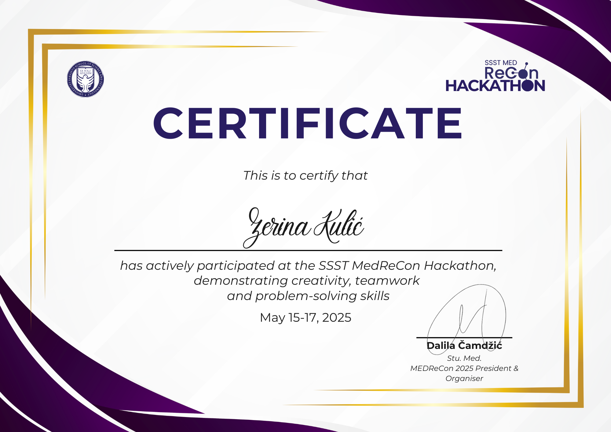

A Computer Science student at SSST University fascinated by how AI systems actually work — from vector embeddings and RAG pipelines to BERT-based NLP and LLM-powered applications built end-to-end and shipped to production.
I'm a 3rd-year Computer Science student with a minor in Electrical Engineering at Sarajevo School of Science and Technology (SSST).
What draws me to AI isn't just the outcomes — it's the mechanics: how vector embeddings compress meaning into geometry, how retrieval-augmented generation grounds language models in real knowledge, and how classical ML algorithms can surface genuine insight from messy real-world data.
Across my projects I've integrated BERT, Llama 3.3, Claude, and Amazon Titan into production-grade systems deployed on AWS, Vercel, and Google Cloud — always building the full stack around the AI layer.
Taught Introduction to Python programming to high school students as part of Bit Alliance's initiative to bring software education to younger generations. Designed and delivered hands-on lessons covering programming fundamentals, problem-solving, and practical coding exercises.
Full-stack apps, AI-powered tools, and data science — every project production-aware and deployable.
AI-powered study assistant where you upload documents (PDF, DOCX, images) and chat with an AI tutor grounded in your own content. Features a fully serverless RAG pipeline on AWS — S3 upload triggers SQS → Lambda, which chunks documents, generates vector embeddings via Amazon Titan Embed v2, and stores them in pgvector for semantic retrieval. Automatically generates flashcard sets and interactive mind maps. Supports real-time collaborative study groups.
Analyzes news articles for sensationalist and clickbait writing patterns using a fine-tuned BERT model (HuggingFace Transformers + PyTorch). Paste text or supply a URL — the backend fetches and parses the article, then scores it sentence-by-sentence, producing an overall sensationalism score, a verdict, and a per-sentence breakdown flagging the most emotionally charged language.
Enter any topic and watch two AI personas argue FOR and AGAINST in real time.
Uses Edge Runtime streaming with ReadableStream for token-level
turn-based responses, Supabase Realtime for live vote bars, and two Llama models — one for
debate, one for topic validation. Every debate gets a permanent shareable URL and appears
on a live leaderboard.
Job application tracker with an AI-powered CV analyzer. Upload a CV (PDF or DOCX) alongside a job description and Llama 3.3 70b via Groq returns a match score, identifies skill gaps, and suggests concrete improvements. Includes full auth (email/password + Google OAuth), and a dashboard with visual stats and charts.
End-to-end CRISP-DM classification project predicting student outcome (Dropout / Enrolled / Graduate) on the UCI Student Academic Success dataset (4,424 records, 36 features). Full pipeline: EDA with 20+ visualizations, feature engineering (12 new features), SMOTE for class imbalance, and comparative evaluation of Decision Tree, kNN, and Naïve Bayes classifiers with fairness/bias checks.
Database-driven web app for Sarajevo's public transport system, built across three courses (Database Systems, Cloud Computing, Web Development). Interactive Leaflet.js map with spatial POINT/LINESTRING data for stops and routes, full passenger and admin flows, DB-level triggers for automated announcements, and an admin dashboard with Chart.js analytics.
Built across every layer of the stack — with a focus on AI/ML tooling and cloud infrastructure.
Building a healthcare solution under pressure, in a team, with a deadline.
Participated in the SSST MedReCon Hackathon, a 3-day competition focused on building technology solutions for the healthcare sector. Together with my team, we designed and developed a full-stack web application aimed at improving healthcare system workflows — demonstrating teamwork, rapid prototyping, and problem-solving under real constraints.

I'm actively looking for AI/ML internships. If you're building something interesting, I'd love to hear about it.